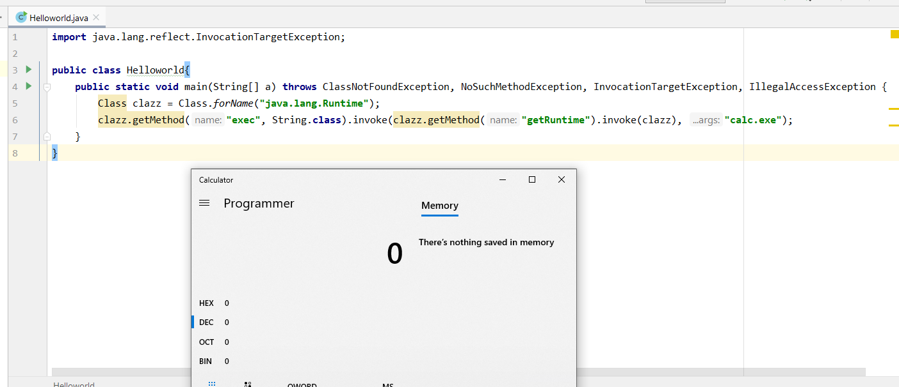
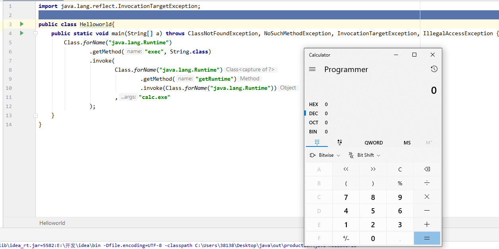
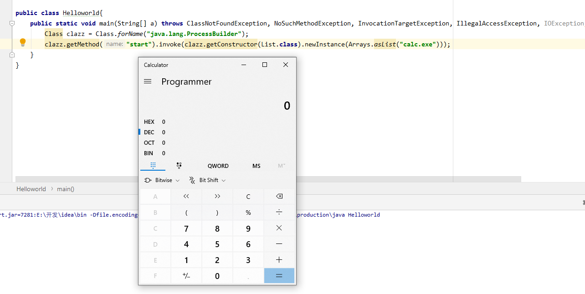
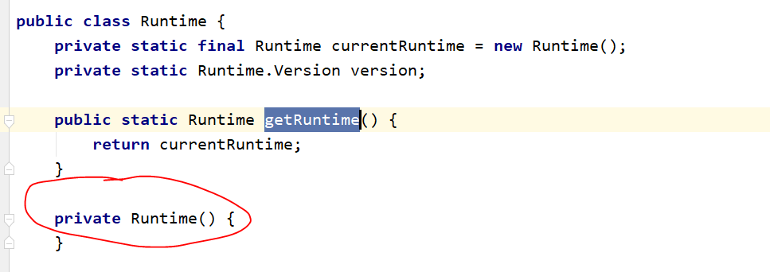
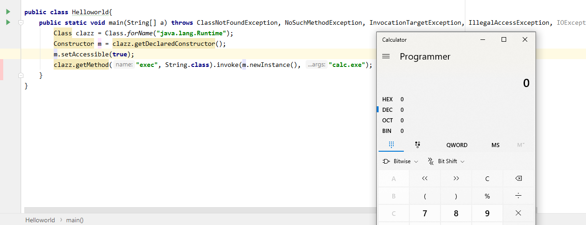
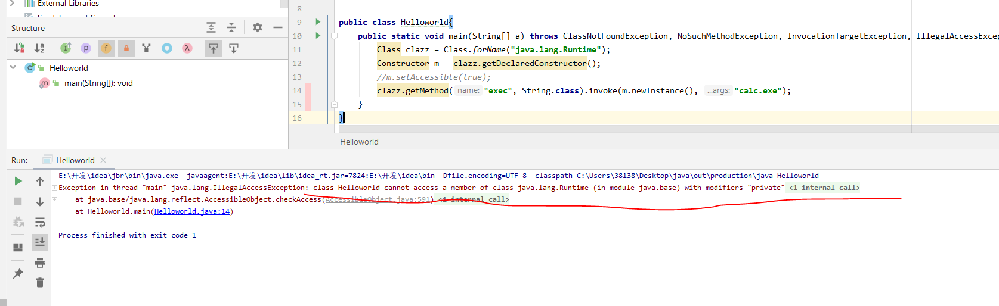

楔子
很久就想写和java审计有关的文章了，java博大精深，学得断断续续，最近来长亭实习，从旁边一个Java大牛师傅学了一下下，还是打算记一下，内容偏易，大牛绕道
目录
Java反射
真正反序列化漏洞的利用，肯定需要了解java反射原理。因为java反序列化的payload大多与反射机制密切相关。
在Java中的反射机制是指在运行状态中，对于任意一个类都能够知道这个类所有的属性和方法；并且对于任意一个对象，都能够调用它的任意一个方法；这种动态获取信息以及动态调用对象方法的功能成为Java语言的反射机制。
总的来说，反射让java可以在运行时，根据传入的类名字符串，去执行这个类存在的方法，而且可以修改属性的访问修饰符（public、private、protect）
总所周知，一个技术的存活，一定有他的价值，否则在自然生存定律中必定被淘汰，核弹之下无冤魂（狗头）。
那么java反射有什么价值么？
我认为就是实现动态。我们举一个例子
例子-反射
假设我们来定义一个女朋友的接口，接口就为想peach，我们尽量使用implements操作，所以抽象的女朋友就行，反正也没有，那么长这样。
1 | interface Girl_friend{ |
因为女孩子种类不同，比如小萝莉还是富婆，我们可以实现一下不同的类女朋友
1 | class Luoli implements Girl_friend{ |
那么我们需要在主类中想peach那就得这样写
1 | public class Helloworld{ |
桃子确实想好了，但是这样就没有动态的概念了，我所理解的动态是你要修改一个类的时候，不需要修改代码，而是通过传参就可
那么我们可以使用传统的工厂方法获取女朋友的实例
工厂方法可以理解为你把女朋友的属性交给工厂，工厂就帮你制作一个女朋友的实例
那么工厂代码应该这样这样写
1 | class Girl_friend_factory{ |
我们可以传入我们期望的女朋友的类型名字就获得了这个实例（可惜现实世界并没有）。
那么我们要用的时候先使用工厂拿到实例Girl_friend f=Girl_friend_factory.getInstance("Luoli");。那么整体代码就是这样了
Helloworld.java
1 | interface Girl_friend{ |
似乎一切很顺利了
但是不知道有没有发现，在Girl_friend_factory中我们用了很多if判断类名，那么一旦这个type有几十种，我们每增加一种都要做三布步操作
- 1、增加新的女朋友类型
- 2、增加if判断
- 3、主类中调用
那么反射其实解决的就是这么一个问题。
反射主要是有这么几个函数直接可调用
获取类的⽅法： forName
实例化类对象的⽅法： newInstance
获取函数的⽅法： getMethod
执⾏函数的⽅法： invoke
我们先来说一说forName的方法
Class.forName 如果你知道某个类的名字，想获取到这个类，就可以使⽤ forName 来获取
比如我们想获得上面的萝莉类（Luoli）,就不需要f=new Luoli();了,而是直接使用反射Girl_friend f=(Girl_friend)Class.forName("Luoli").newInstance();就获得了萝莉的实例，不知道现在有没有键盘侠站出来说明明f=new Luoli();比后面的短不是么。
但是我们现在说的重点是动态，后者的类名可以动态传入，岂不是美滋滋。
那么完整的代码就是
1 | interface Girl_friend{ |
到此我们反射获取类的⽅法： forName的意义大概就有了
我们一直说到反射有4个函数比较重要
获取类的⽅法： forName
实例化类对象的⽅法： newInstance
获取函数的⽅法： getMethod
执⾏函数的⽅法： invoke
那么比较重要的例子一般就是长这样
1 | public void execute(String className, String methodName) throws Exception { |
知道一点点java-rce的同志应该见过java命令执行最常见的直接调用payload
1 | Runtime.getRuntime().exec("calc.exe"); |
getRuntime():其实就是Runtime类获取对象的方式，等于new一个Runtime类。之所以封装成一个函数是为了不调用一次建立一个对象，只获取一个对象来执行操作。
exec():调用exec函数
calc.exe：调用计算器程序
如果我们将这个poc拓展，使用反射四个函数来利用，那么长这样
1 | import java.lang.reflect.InvocationTargetException; |

我们一步一步来聊一聊这个反射的poc为何能成功。
forName
获得一个class对象(java.lang.Class)有三种方法：
- obj.getClass(): 如果上下⽂中存在某个类的实例 obj ，那么我们可以直接通过，obj.getClass() 来获取它的类
- Test.class:Test是一个已经加载的类，想获取它的java.lang.Class对象，直接拿取class参数即可。（这不是反射机制）
- Class.forName:如果知道类的名字，可以直接使用forname来获取
可以通过简短的代码验证-其中Runtime是一个已经加载了的类，getRuntime能获得一个类的一个对象，类似于工厂了
1 | System.out.println(Runtime.getRuntime()); |
输出
1 | java.lang.Runtime@16b98e56 |
getMethod
getMethod 的作用是通过反射获取一个类的某个特定的公有方法。
而Java中支持类的重载，我们不能仅通过函数名来确定一个函数。所以，在调用 getMethod 的时候，我们需要传给他你需要获取的函数的参数类型列表，如下：
后面的String.class是参数
1 | Class.forName("java.lang.Runtime").getMethod("exec", String.class) |
invoke
invoke方法位于Method类下，其的作用是传入参数，执行方法
1 | public Object invoke(Object obj, Object... args) |
注意它的第一个参数是执行method的对象
它的第一个参数是执行method的对象：
- 如果这个方法是一个普通方法，那么第一个参数是类对象
- 如果这个方法是一个静态方法，那么第一个参数是类
我们正常执行方法是 [1].method([2], [3], [4]...) ，其实在反射里就是method.invoke([1], [2], [3], [4]...) 。
对于我们的exec，是一个普通方法，所以需要传入类对象，即invoke(类对象，exec方法传入的参数)
合并反射函数弹计算器
那么通过反射调用计算器的一句话代码可以为
1 | Class.forName("java.lang.Runtime").getMethod("exec", String.class).invoke(Class.forName("java.lang.Runtime").getMethod("getRuntime").invoke(Class.forName("java.lang.Runtime")),"calc.exe") |
我通过缩进来更友好的体现
1 | Class.forName("java.lang.Runtime") |
其实是调用了2次invoke函数，里面一层是使用getRuntime的无参函数获得一个实例。外面一层则是调用exec来弹计算器

如果做拆分，那么一步步就是这样的
1 | Class clazz = Class.forName("java.lang.Runtime"); |
指定的构造方法生成类的实例
假设一个类没有getRuntime这样的获取实例的方法，也没有公共的无参构造方法的时候，就要用到getConsturctor()函数
getConsturctor()函数可以选定指定接口格式的构造函数(由于构造函数也可以根据参数来进行重载)，即：getConsturctor(参数类型)
选定后我们可以通过newInstance(),并传入构造函数的参数执行构造函数，即newInstance(传入的构造函数参数)。
比如ProcessBuilder有两个构造函数：
public ProcessBuilder(List
command)
public ProcessBuilder(String… command)(此处，String…这种语法表示String参数数量是可变的，与String[]一样)
对应2种方法的poc即长这样
Class.forName(“java.lang.ProcessBuilder”).getConstructor(String.class).newInstance(“calc.exe”))
Class.forName(“java.lang.ProcessBuilder”).getConstructor(List.class).newInstance(Arrays.asList(“calc.exe”)))
作为list的构造那么代码为
1 | Class clazz = Class.forName("java.lang.ProcessBuilder"); |
作为string的构造代码为
1 | Class clazz = Class.forName("java.lang.ProcessBuilder"); |

执行私有方法
这是我认为反射最骚的
我们前面用的方法或构造方法是public函数，但是如果是私有方法，我们该如何调用？
之前我们用的都是getMethod、getConstructor，接下来需要使用getDeclaredMethod、getDeclaredConstructor
getMethod等方法获取的是当前类中所有公共方法，包括从父类继承的方法
getDeclared等方法获取的是当前类中“声明”的方法，是实在写在这个类里的，包括私有的方法，但从父类里继承来的就不包含了
之前说到Runtime的构造方式是一个私有方法

如果代码还是按之前的写法
1 | Class clazz = Class.forName("java.lang.Runtime"); |
得到报错
大概意思就是不能直接使用clazz.getConstructor() 函数
那么接下来我们通过修改修饰符来调用Runtime的构造方法来获取一个实例来执行calc.exe
代码
1 | Class clazz = Class.forName("java.lang.Runtime"); |
成功弹出计算器

我们假设把m.setAccessible(true);注释起来
原因确实是私有变量的问题

在获取到私有方法后，通过setAccessible(true)可以打破私有方法访问限制，从而进行调用。在其他地方的使用，getDeclaredMethod、getDeclaredConstructor和getMethod、getConstructor使用方法是一致的
附录
反射机制的相关类
与Java反射相关的类如下：
| 类名 | 用途 |
|---|---|
| Class类 | 代表类的实体，在运行的Java应用程序中表示类和接口 |
| Field类 | 代表类的成员变量（成员变量也称为类的属性） |
| Method类 | 代表类的方法 |
| Constructor类 | 代表类的构造方法 |
Class类
Class代表类的实体，在运行的Java应用程序中表示类和接口。在这个类中提供了很多有用的方法，这里对他们简单的分类介绍。
- 获得类相关的方法
| 方法 | 用途 |
|---|---|
| asSubclass(Class clazz) | 把传递的类的对象转换成代表其子类的对象 |
| Cast | 把对象转换成代表类或是接口的对象 |
| getClassLoader() | 获得类的加载器 |
| getClasses() | 返回一个数组，数组中包含该类中所有公共类和接口类的对象 |
| getDeclaredClasses() | 返回一个数组，数组中包含该类中所有类和接口类的对象 |
| forName(String className) | 根据类名返回类的对象 |
| getName() | 获得类的完整路径名字 |
| newInstance() | 创建类的实例 |
| getPackage() | 获得类的包 |
| getSimpleName() | 获得类的名字 |
| getSuperclass() | 获得当前类继承的父类的名字 |
| getInterfaces() | 获得当前类实现的类或是接口 |
- 获得类中属性相关的方法
| 方法 | 用途 |
|---|---|
| getField(String name) | 获得某个公有的属性对象 |
| getFields() | 获得所有公有的属性对象 |
| getDeclaredField(String name) | 获得某个属性对象 |
| getDeclaredFields() | 获得所有属性对象 |
- 获得类中注解相关的方法
| 方法 | 用途 |
|---|---|
| getAnnotation(Class annotationClass) | 返回该类中与参数类型匹配的公有注解对象 |
| getAnnotations() | 返回该类所有的公有注解对象 |
| getDeclaredAnnotation(Class annotationClass) | 返回该类中与参数类型匹配的所有注解对象 |
| getDeclaredAnnotations() | 返回该类所有的注解对象 |
- 获得类中构造器相关的方法
| 方法 | 用途 |
|---|---|
| getConstructor(Class…<?> parameterTypes) | 获得该类中与参数类型匹配的公有构造方法 |
| getConstructors() | 获得该类的所有公有构造方法 |
| getDeclaredConstructor(Class…<?> parameterTypes) | 获得该类中与参数类型匹配的构造方法 |
| getDeclaredConstructors() | 获得该类所有构造方法 |
- 获得类中方法相关的方法
| 方法 | 用途 |
|---|---|
| getMethod(String name, Class…<?> parameterTypes) | 获得该类某个公有的方法 |
| getMethods() | 获得该类所有公有的方法 |
| getDeclaredMethod(String name, Class…<?> parameterTypes) | 获得该类某个方法 |
| getDeclaredMethods() | 获得该类所有方法 |
- 类中其他重要的方法
| 方法 | 用途 |
|---|---|
| isAnnotation() | 如果是注解类型则返回true |
| isAnnotationPresent(Class<? extends Annotation> annotationClass) | 如果是指定类型注解类型则返回true |
| isAnonymousClass() | 如果是匿名类则返回true |
| isArray() | 如果是一个数组类则返回true |
| isEnum() | 如果是枚举类则返回true |
| isInstance(Object obj) | 如果obj是该类的实例则返回true |
| isInterface() | 如果是接口类则返回true |
| isLocalClass() | 如果是局部类则返回true |
| isMemberClass() | 如果是内部类则返回true |
Field类
Field代表类的成员变量（成员变量也称为类的属性）。
| 方法 | 用途 |
|---|---|
| equals(Object obj) | 属性与obj相等则返回true |
| get(Object obj) | 获得obj中对应的属性值 |
| set(Object obj, Object value) | 设置obj中对应属性值 |
Method类
Method代表类的方法。
| 方法 | 用途 |
|---|---|
| invoke(Object obj, Object… args) | 传递object对象及参数调用该对象对应的方法 |
Constructor类
Constructor代表类的构造方法。
| 方法 | 用途 |
|---|---|
| newInstance(Object… initargs) | 根据传递的参数创建类的对象 |
测试
1 | System.out.println(Runtime.class.getName()); |
输出
1 | java.lang.Runtime |